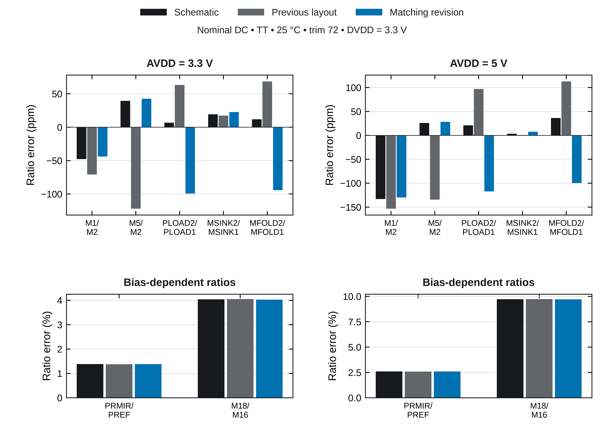
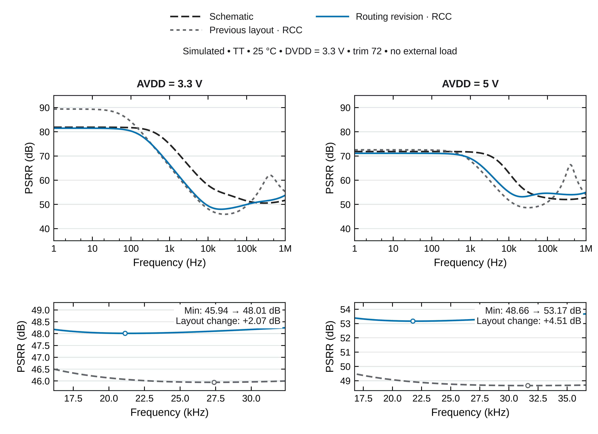

GF180MCU-D · Chipalooza #3 · matching revision · 21 October 2026
686.0 × 399.6 µm · 0.274 mm² · DRC: 0 · LVS: matched
Core verification is complete for the pinned decks. This remains a layout review candidate, with electrical qualification and harness integration open.
The earlier compact floorplan guides this revision. The output capacitors return to two rows; matched arrays remain close to related circuitry, with explicit dummy surrounds. The block occupies 52.6% of the approximate 1270 × 410 µm planning envelope.

Thirteen MOS arrays have full tied-off dummy perimeters. The main three-way mirror arrays have equal centroids and second moments. The main mirror's local drain metal area, length and via counts are equal; global branch RC is not claimed equal. No unrelated net crosses the audited matched channels. Functional sizes and connectivity are unchanged.
Full matching review and primary layout references · Independent geometry audit · Unit placement detail


Minimum PSRR changes by +0.93 dB at 3.3 V and +1.25 dB at 5 V. Both old and new GDS use the same corrected extractor, primitive-terminal anchors and conserved-RCC approximation. Signal/supply resistance and approximate coupling are included; AVSS/DVSS resistance is omitted.
Early long-route trials showed offset from VREF, trim and PTAT resistance and PSRR sensitivity to amplifier/supply coupling. The delivered layout reduces routing distance and keeps C1 near the amplifier. Removing selected coupling in diagnostic counterfactuals helps identify remaining sensitivity; those artificial circuits are not deliverables.
Diagnostic AC metrics · Capacitance-conservation check · Controlled baseline provenance
The complete unedited DRC deck, core LVS and both extraction-topology LVS audits pass. An independent rebuild matches every geometry/text layer. All 360 fixed-code corner DC points complete; 2 cases retain recovered dynamic-gmin warnings. Nominal supply cycling is rerun.
Neither schematic nor layout reaches the existing 60 dB PSRR testbench criterion. Full ground-network RC, statistical mismatch/trim yield, EM/IR, stability, noise, output loading, final wrapper and pin assignment remain open.
Bound release evidence · Nominal screens · Corner DC · Supply cycling · Reproduction
The schematic now contains 13 native PDK transistor symbols with explicit supply ties for all 261 dummy units. A fresh netlist preserves the archived circuit, and full core LVS passes against the unchanged GDS. Native-symbol LVS and equivalence evidence · Updated schematic views
Eight fresh nominal simulations confirm that the native-symbol schematic preserves mirror currents, terminal biases and all 481 samples of each PSRR curve at saved precision, for both 3.3 V and 5 V. Schematic minimum PSRR remains 50.56/52.04 dB; extracted RCC remains 48.10/53.37 dB. TT, 25 °C, trim 72, DVDD 3.3 V, no external load. Fresh simulation comparison and logs.
The original pre-layout temperature-trim chart, specifications and simulation instructions remain in the main README. The previous layout report and original mirror audit retain historical findings.
GDS SHA-256: 868a5339f5ba86624387fb1692e9608f3a689568eddaf98099092b62fe544b36